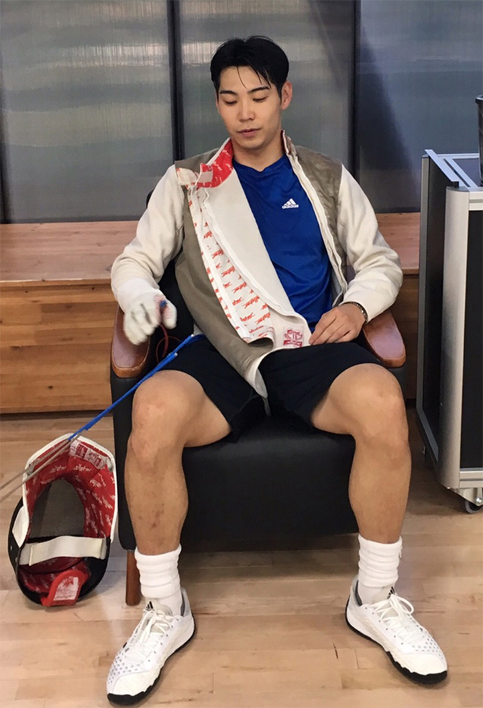
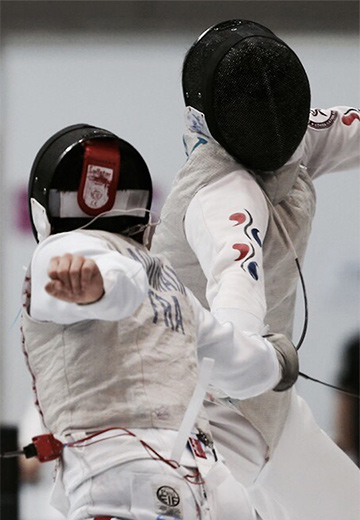
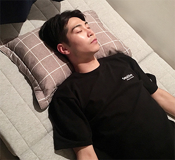

펜싱국가대표
박준영선수
시그니처 토퍼는,
제게 필수 장비입니다.
저는 국가대표 펜싱선수입니다.
펜싱은 검을 가지고 상대하기 때문에 항상 신중한 자세로 훈련에 임
하며, 훈련도 실전처럼 긴장감의 연속인데요.
어떻게 잘 쉬느냐에 따라 컨디션과 경기 성적이 큰 영향을 받기 때문
에 쉬는 것도 잘 쉬어 효율적인 컨디션 유지가 중요합니다.
훈련은 물론이고 시합 기간이 아닐 때에도 매일 몸을 최상으로 유지
하기 위해 노력합니다. 오늘의 피로를 내일로 가져가지 않기 위해 집
에 와서는 오로지 휴식에 집중하려고 하죠.
시그니처토퍼는, 누워보면 몸을 전체적으로 감싸줘 편안한 숙면을
도와주는 것을 느낍니다. 모든 장비를 최고급으로 챙기는 토퍼는 제
게 경기 전 체력 충전에 가장 좋은 역할을 해주고 있습니다.
‘최상의 컨디션을 위해서’

